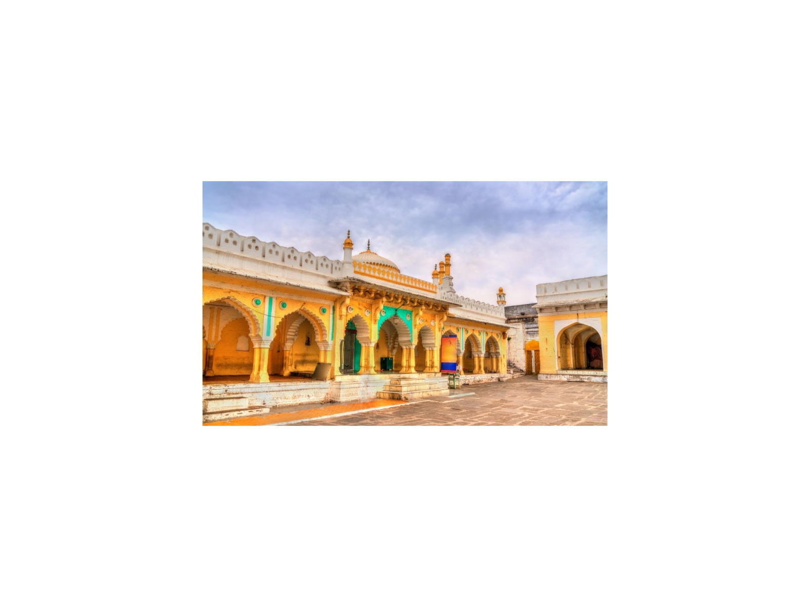

Aurangzeb's Tomb, Khuldabad
The simple grave of the last great Mughal emperor
Overview
Aurangzeb, the sixth Mughal emperor, died in 1707 and was buried at Khuldabad, near Ellora, in a simple grave in the courtyard of the shrine of the Sufi saint Shaikh Zainuddin, as he had wished. The grave is plain and was later enclosed with a marble screen.
His modesty contrasts with the grand tombs of his predecessors, such as the Taj Mahal and Humayun's Tomb. The walled town of Khuldabad also holds the graves of other Sufi saints and Deccan rulers.
What to look for
- The simple grave in the courtyard
- The shrine of Shaikh Zainuddin nearby
- The old gates of Khuldabad
Visiting tips
- Dress modestly, cover your head and remove your shoes at the shrine.
- Allow 30 to 45 minutes; it fits between Daulatabad and Ellora.
- It is a place of pilgrimage, so keep your voice low.
Why visit with a private guide
A private guide shows you where to stand, when to arrive and what most visitors miss at Aurangzeb's Tomb, Khuldabad, and fits the visit around the rest of your day.
More photographs


Nearby
Ajanta Caves Bibi Ka Maqbara Daulatabad Fort Kailasa Temple Lonar Crater Daitya Sudan Temple
Tell me your dates and interests
I will personally prepare an itinerary and quotation within 24 hours. No groups, no fixed scripts.